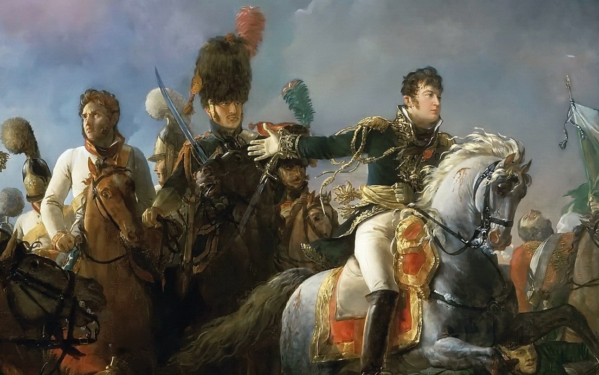
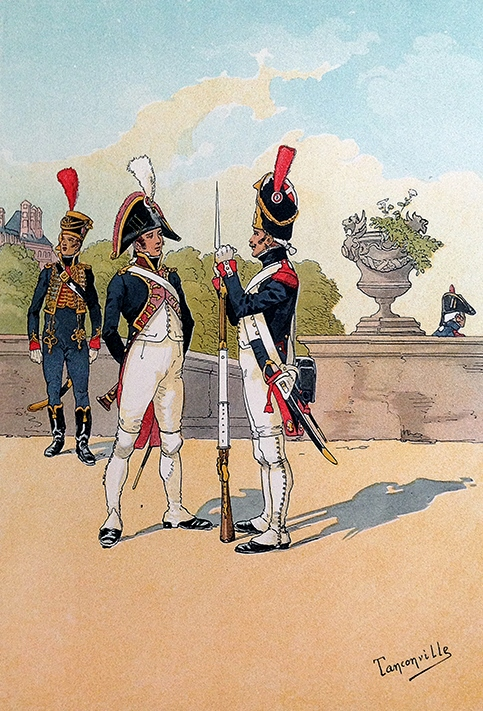
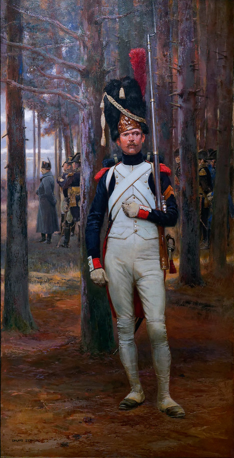
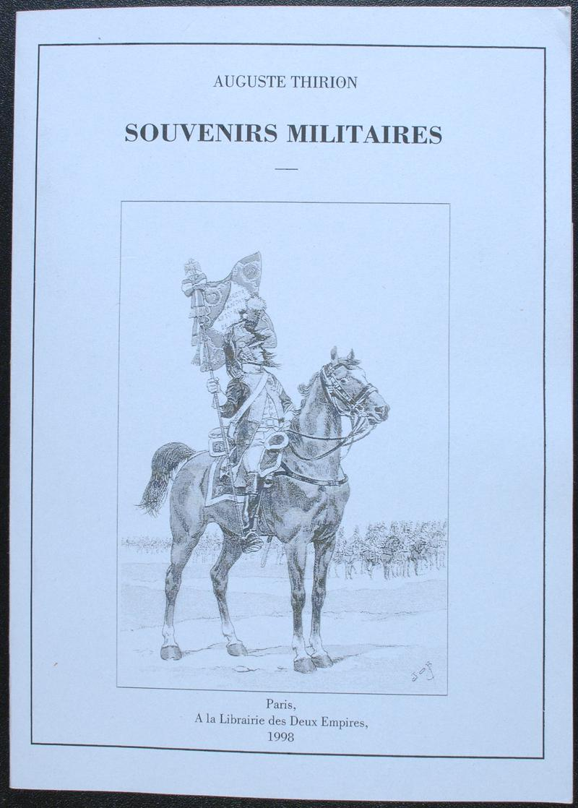

보로디노 전투 (4) - 아우스테를리츠의 기억
게시: 2020-08-20T06:30:14+09:00
9월 6일 밤, 나폴레옹의 천막에서 당직을 설 장군은 용감하고 충직한 랍(Jean Rapp)이었습니다. 나폴레옹은 전날 밤 잠들기 전에 근처를 흐르는 모스크바 강의 이름을 따서 내일 있을 전투의 이름을 'la Moskowa'라고 미리 지어놓을 정도로 이 전투의 승리를 자신했습니다. 그러나 다음 날 새벽 3시에 일어나 펀치주 한잔의 조촐한 아침 식사를 랍과 함께 한 나폴레옹의 기분은 이상하리만큼 차분했습니다. 그는 랍에게 오늘 전세가 어떨 것 같으냐고 물은 뒤, 당연히 돌아온 낙관적인 대답에 대해 '행운의 여신은 변덕스러운 매춘부인데 이제 그걸 경험하게 될 것'이라는 매우 냉소적인 혼잣말을 했습니다. 랍은 그 풀이 죽은 듯한 나폴레옹의 어조가 마음에 들지 않았습니다. 그는 '이제 모스크바가 멀지 않았고 먹을 것을 구할 곳은 모스크바 밖에 없다는 것을 모든 병사들이 잘 안다'라고 대꾸하자 나폴레옹은 이렇게 말했습니다. "불쌍한 나의 군대, 이젠 정말 쪼그라 들었군. 하지만 남은 것만으로도 충분해. 나의 근위대는 아직 멀쩡하니까."

(제라르(Gerard)가 그린 유명한 그림 1805년 아우스테를리츠 전쟁화에서 나폴레옹에게 보고하는 랍의 모습을 확대한 것입니다. 왼쪽의 흰 제복을 입은 사람이 랍이 포로로 잡아온 볼콘스키 대공이고, 오른쪽의 모자를 쓰지 않은 인물이 랍입니다. 랍의 오른 손목에 끈으로 묶어놓은 군도가 부러진 것을 보실 수 있습니다. 랍이 정말 자랑스러워할 그림이지요.) 나폴레옹은 군대를 어떻게 활용할지는 매우 잘 알았지만 군대의 보존에 대해서는 관심이 없었다는 평가를 들을 정도로 병사들의 복지에 대해서는 큰 신경을 쓰지 않았습니다. 그러나 그는 일반 부대에 비해 근위대를 언제나 지나칠 정도로 차별 우대하고 애지중지했습니다. 근위대는 나폴레옹이 처음 권좌에 올랐던 제1통령 시절 통령 근위대(Garde des consuls)을 조직하면서 처음 만들어진 부대로서, 나폴레옹이 정권 유지는 물론 전투에서의 승리를 위해 의존하던 최정예 부대였습니다. 근위대의 유격병(chasseur, 사냥꾼이라는 뜻, 엽병)이 되기 위해서는 170cm, 근위대 척탄병(grenadier, 수류탄 던지는 병사라는 뜻)이 되기 위해서는 178cm 이상의 키를 가져야만 했습니다. 나폴레옹보다 약 50년 정도 뒤인 19세기 중후반에도 프랑스인의 평균 신장이 165cm 정도에 불과했다는 것을 생각하면 키다리들만 뽑아 놓은 부대였습니다. 하지만 원래 이 부대에 들어오기 위해서는 그냥 키가 크고 총 잘 쏘는 것만으로는 부족했고, 원래는 나폴레옹을 따라 최소 4번의 원정을 경험해야만 선발 자격이 생길 정도로 충성심과 실력, 경험은 물론 '전투에서의 운'도 매우 좋았던 병사들만 뽑아놓은 진짜 실력파 최정예 부대였습니다. 다만 근위대가 확대되면서 1805년 아우스테를리츠 이전에 선발되었던 그런 오리지널 근위대원들은 고참 근위대(Vieille Garde, Old Guard)로 편성되었고, 아우스테를리츠(1805년)~아일라우(1809년) 사이에 전공을 세운 병사들로 구성된 근위대원들은 중견 근위대(Moyenne Garde, Middle Guard)가 되었습니다. 그리고 그 이후 그냥 매년 새로 뽑는 신병들 중에 우수한 병사들을 선발하여 구성한 근위대는 신참 근위대(Jeune Garde, Young Guard)가 되었는데, 이 신참 근위대는 사실 제대로 된 근위대라고 인정을 받지는 못했습니다. 나폴레옹이 이들을 믿는 것은 이들이야말로 나폴레옹 전술의 핵심인 기동력과 사기, 그리고 끈기를 모두 갖춘 최정예로서, 불리한 상황 속에서도 결정적인 한방을 날려주는 감춰둔 단검 같은 존재였기 때문이었습니다. 나폴레옹의 군대가 어느 순간에나 무적이었던 것은 아니었고 많은 승전 속에도 국부적으로 또 일시적으로 프랑스군이 우르르 무너져 도주하는 경우도 많았습니다. 그러나 실제로 근위대는 단 한번도 무너져 도주한 경우가 없었습니다. 근위대가 최초로 무너진 것은 1815년 워털루 전투 때로서, 이때 중견 근위대가 완전히 무너져 후퇴 명령이 없었는데도 도주하는 것을 보자 모든 것이 끝났다고 생각하고 전체 프랑스군이 무너지기도 했습니다. 그러나 그런 상황 속에서도 고참 근위대는 무너지지 않았고 그때 유명한 "La Garde meurt mais ne se rend pas!" (근위대는 죽을 뿐 항복하지 않는다)라는 구호가 나오기도 했습니다. 그러나 나폴레옹은 근위대에 대한 정신적 의존이 너무 컸고, 이것이 패착을 낳기도 했습니다. 나중에 보시겠지만 이 보로디노 전투가 바로 그 대표적인 사례가 됩니다.

(통령 근위대의 병사들 모습입니다. 왼쪽부터 근위 해병, 근위 군악대, 근위 척탄병입니다.)

(나폴레옹을 호위하는 근위대 척탄병의 모습입니다. 머스켓 라이플 외에 검을 휴대한 것이 보입니다. 이는 근위대의 특권으로서, 원래 검은 장교 및 기병들만 허용된 것이었습니다. 실제로는 머스켓 소총병에게 검은 아무 짝에도 도움이 되지 않았고, 그래서 근위대도 실제 전투에 들어갈 때는 검은 숙영지에 떼어두고 갔다고 합니다. 잃어버리면 큰 일이쟎아요.) 나폴레옹은 어두운 새벽을 뚫고 셰바르디노 보루에 올랐고, 각 부대들도 이미 배정된 전투 위치로 움직이고 있었습니다. 셰바르디노 보루 앞을 지나치는 부대들은 나폴레옹을 보고 '황제 폐하 만세' (Vive l'Empereur)를 외쳤고 나폴레옹은 '저게 바로 아우스테를리츠의 정신'이라며 기뻐했습니다. 오전 5시반 경에는 모든 정렬이 완료되었고, 기마 포병대 소속 세루지에(Seruzier) 대령이라는 사람은 이 광경을 보고 스스로 감격하여 '평생 이 날의 프랑스군보다 더 찬란한 군대는 본 적이 없다, 특히 빌나를 출발한 이후로 겪었던 그 참혹한 고생 뒤에도 이렇게 파리 튈르리 궁에서 사열식을 할 때처럼 멋진 모습으로 전장에 나왔다'라는 기록을 남겼습니다. 각 연대 지휘관들은 다음과 같은 짧은 나폴레옹의 연설문을 대독했습니다. Soldats! C'est la bataille qui vous attend tant! Maintenant, la victoire dépend de vous. Nous en avons besoin. Cela nous donnera de l'abondance, de bons quartiers d'hiver et un retour rapide dans notre patrie! Conduisez-vous comme vous l'avez fait à Austerlitz, à Friedland, à Vietebsk, à Smolensk, et que les générations les plus éloignées citent avec fierté votre conduite en ce jour. Qu'on dise de vous: "Il était à cette grande bataille sous les murs de Moscou!" (병사들이여 ! 이것이 그대들이 그토록 바라던 바로 그 전투이다. 이제 승리는 그대들에게 달려있다. 우리에겐 승리가 필요하다. 풍족한 식량과 따뜻한 겨울 숙영지를 확보하고, 더 나아가 빨리 고향으로돌아가기 위해서는 승리해야만 한다. 그대들이 아우스테를리츠, 프리틀란드, 비텝스크, 그리고 스몰렌스크에서 해주었던 그대로만 해주면 된다. 그러면 먼 훗날 후손들이 오늘 그대들에 대해 자랑스럽게 말하게 될 것이다. "그 분이 모스크바 성벽 아래에서 벌어진 그 위대한 전투 현장에 계셨다"라고 !) 이건 짧은 내용 속에 이겨야 할 필요성과 이길 수 있다는 격려와 함께, 병사들의 마음 속에 희미하게 자리잡은 허영심을 격동시키는 진짜 명연설입니다. 실제로 제2 기병연대 소속 티리옹(Auguste Thirion)이라는 부사관은 이 연설을 듣고 병사들의 사기가 정말 제대로 솟구쳤다고 회고록에 남겼습니다. 비록 모스크바 성벽은 전혀 보이지 않는 장소였지만, 나폴레옹은 이집트 카이로 입성하기 전 마멜룩을 격파한 전투에서도 피라밋은 전혀 보이지 않는 곳에서 싸웠지만 병사들에게 '수천년의 역사가 너희를 내려다보고 있다'라며 뻥을 치고 전투 이름도 피라미드 전투라고 지은 바 있었습니다.

(티리옹 하사가 남긴 '군대 회고록'입니다. 티리옹 하사는 모스크바에서 퇴각할 때 자기 연대의 부대 깃발, 즉 나폴레옹이 하사한 독수리 깃발을 떠맡게 되었는데, 말도 죽은 상태에서 들어보니 정말 기가 막히게 무거워서 받자마자 그 깃발을 없애버릴 생각을 하다가, 결국 부대장인 대령에게 '이대로 가다간 카자흐 기병들에게 깃발을 빼앗기게 된다, 그런 치욕을 당하느니 깃발을 어딘가에 묻어버리자'라고 설득하여 결국 성공합니다. 독수리와 깃발은 망토에 싸서 묻고 깃대는 태워버렸답니다.) 나폴레옹은 누구보다도 병사들의 심리를 잘 아는 당대 심리전의 대가였습니다. 그는 이미 러시아군이 아우스테를리츠에서 보기 흉하게 도망친 전적이 있다는 과거 사실을 가지고 '아우스테를리츠의 도망자'(le fuyard d'Austerlitz)라고 부르고 있었습니다. 전투가 끝나고 난 아우스테를리츠 현장을 둘러보며, 그는 사실과는 무관하게 '오스트리아군이 지키고 있던 곳에는 오스트리아군의 시체가 즐비한데, 러시아군이 지키고 있던 곳에는 러시아 병사들이 버리고 도망친 배낭만 가득하더라'라며 일부러 러시아군을 모욕하는 소문을 낸 바 있었는데, 마치 이렇게 7년 후를 내다본 듯한 행동이었습니다. (물론 풀투스크나 아일라우에서 러시아군이 얼마나 잘 싸웠는지는 편리하게도 잊으려 애썼습니다.) 이윽고 9월의 태양이 자욱한 안개를 뚫고 떠오르자 그를 가리키며 주변 참모들에게 외쳤습니다. "아우스테를리츠의 태양을 보라 !" (Voila le soleil d'Austerlitz !) 그는 이처럼 보로디노 전투를 아우스테를리츠 전투의 재판으로 이끌려고 노력했습니다. 생각해보면 그때도 러시아군과 싸웠고, 그때도 쿠투조프가 상대 지휘관이었으며 (실제로는 아니었습니다), 그때도 프랑스군은 굶주린 상태였고, 그때도 나폴레옹은 아침으로 펀치주 한잔을 마셨을 뿐이었습니다. 이번에도 그때처럼 대승을 거두지 못할 이유가 없었습니다. 그러나 나폴레옹은 무시하고 있었지만 다른 점이 너무 많았습니다. 러시아군은 이미 프랑스군과 여러차례 싸운 경험이 쌓인 단련된 군대였고, 무엇보다 그때는 러시아군이나 프랑스군이나 먼 체코 땅에서 싸웠지만 이 곳은 서방 누구도 와보지 못한 깊숙한 러시아 내륙 모스크바 코 앞이었습니다. 프랑스군은 아우스테를리츠 전날 밤 비록 보급이 안되어 빵은 먹지 못했어도 모닥불에서 감자를 구워먹을 수 있었습니다만, 지금은 감자는 커녕 땔나무조차 구하지 못한 상태였습니다. 무엇보다도, 프랑스군이 달랐습니다. 아우스테를리츠의 프랑스군은 영국을 침공한다며 2년 동안 불로뉴에서 갈고 닦아 사기와 생기가 넘치는 정병이었습니다만, 지금은 많은 부대들이 유럽 여기저기에서 끌려온 외국인들과 어린 프랑스 소년들로 채워져 있었습니다. 게다가 나폴레옹 본인도 달랐습니다. 7년 전 아우스테를리츠 전날 밤, 뮈라와 술트 등 쟁쟁한 부하들이 후퇴를 권유할 때 이미 모든 계획을 세워놓았던 나폴레옹은 그들을 비웃었습니다. 랍을 제외한 그의 부하 대부분은 모르고 있었지만, 나폴레옹은 이미 늙고 지친데다, 당시 고열과 배뇨 장애로 무척 건강이 좋지 않은 상태였습니다. 이 차이가 결국 매우 큰 결과를 낳게 됩니다. Source : 1812 Napoleon's Fatal March on Moscow by Adam Zamoyski
en.wikipedia.org/wiki/Estimates_of_opposing_forces_in_the_Battle_of_Borodino
napoleonistyka.atspace.com/Borodino_battle.htm
en.wikipedia.org/wiki/Jean_Rapp
napoleon1812.wordpress.com/tag/auguste-thirion/
www.bertrand-malvaux.com/en/p/23311/thirion-souvenirs-militaires.html